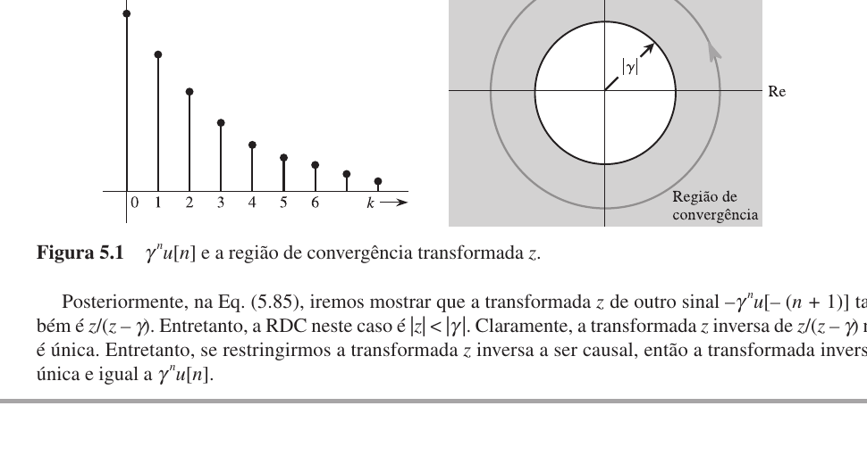
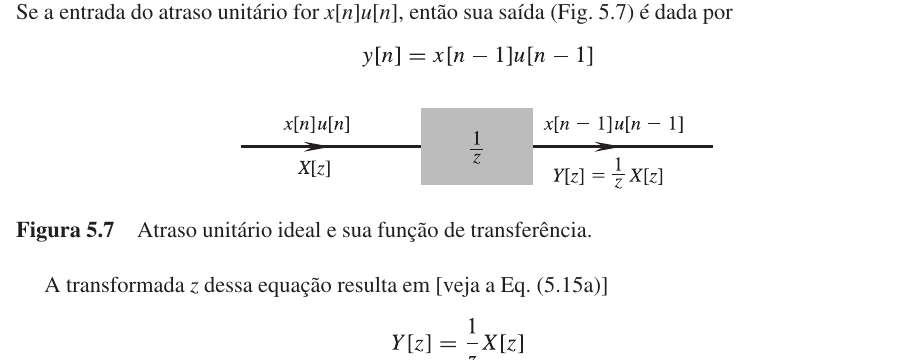
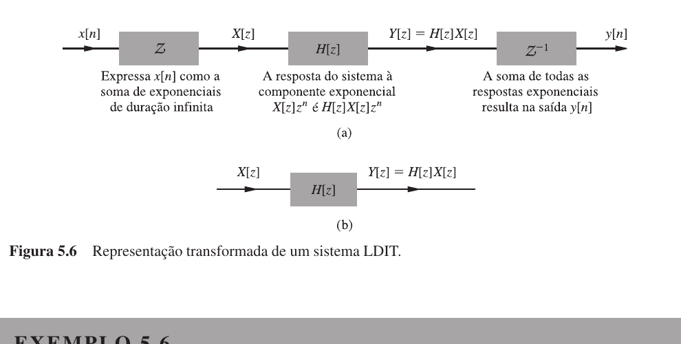
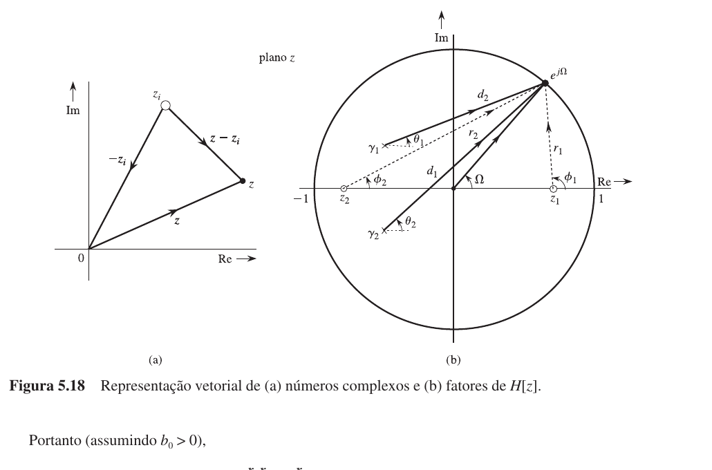
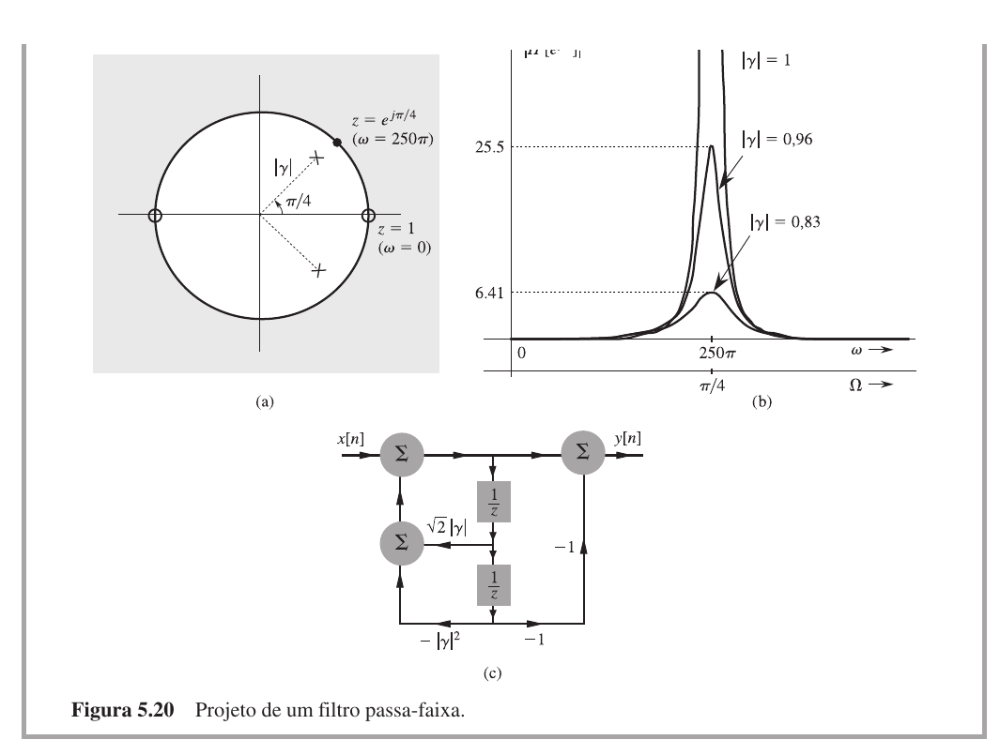

Introdução12.1
Esta aula apresenta a Transformada Z, a ferramenta que leva sequências discretas do domínio do tempo para o domínio da variável complexa $z$, com ganhos análogos aos da Transformada de Laplace para sistemas contínuos.
Na aula anterior, você estudou sinais discretos, equações de diferenças, resposta ao impulso e convolução discreta. Esse conjunto já permite analisar sistemas no domínio do tempo: se você conhece $h[n]$, calcula a saída por
$$ y[n]=x[n]*h[n] $$
A fórmula é correta. Mas nem sempre é prática. A convolução pode ser trabalhosa e não mostra diretamente como o sistema altera cada frequência. Você quer uma ferramenta que transforme convolução em multiplicação e equações de diferenças em álgebra.
Essa ferramenta é a Transformada Z.
A Transformada Z leva sequências do domínio do tempo discreto para uma função da variável complexa $z$. Convolução vira multiplicação, equações de diferenças viram equações algébricas e a estabilidade passa a ser lida pela posição dos polos em relação ao círculo unitário.
Por que você precisa da Transformada Z12.2
Em tempo contínuo, a Transformada de Laplace permitiu analisar sistemas com equações diferenciais usando funções algébricas em $s$. Em tempo discreto, a Transformada Z cumpre o mesmo papel para equações de diferenças.
Na aula 11, você viu que uma equação como
$$ y[n]=0{,}8y[n-1]+x[n] $$
pode ser resolvida passo a passo. Esse método recursivo é simples para calcular algumas amostras, mas não ajuda a entender o sistema como um todo. A Transformada Z oferece uma visão global. Com ela, você responde a perguntas que o método iterativo não alcança: qual é a função de transferência? O sistema é estável? Onde estão os polos? Que frequências serão reforçadas ou atenuadas?
Você já resolveu $y[n]=0{,}5y[n-1]+x[n]$ para $x[n]=u[n]$ iterativamente no Exemplo 4 da aula 11. Quanto deu $y[3]$? E para qual valor $y[n]$ parecia tender? Quando terminar esta aula, você vai obter a expressão fechada $y[n]=2-(0{,}5)^n$ em três linhas de álgebra.
Definição da Transformada Z12.3
A Transformada Z de uma sequência $x[n]$ é definida por
$$ X(z)=\sum_{n=-\infty}^{\infty}x[n]z^{-n} $$
em que $z$ é uma variável complexa.
Para sinais causais, que começam em $n=0$, usamos com frequência a forma unilateral:
$$ X(z)=\sum_{n=0}^{\infty}x[n]z^{-n} $$
A forma unilateral é a mais comum em sistemas físicos e filtros digitais, porque normalmente você assume que a entrada começa em algum instante inicial e conhece as condições iniciais. A forma bilateral é necessária quando o sinal existe para índices negativos.
Uma maneira simples de ler a definição: a Transformada Z transforma a sequência $x[0],x[1],x[2],\ldots$ em uma série em potências de $z^{-1}$:
$$ X(z)=x[0]+x[1]z^{-1}+x[2]z^{-2}+x[3]z^{-3}+\cdots $$
Esse formato revela algo importante: $z^{-1}$ aparece como atraso unitário. Em filtros digitais, atrasar uma amostra é a operação básica. Por isso, o domínio Z conversa diretamente com a implementação.
Região de convergência12.4
Nem todo somatório da Transformada Z converge para qualquer valor de $z$. A região do plano complexo em que o somatório existe é chamada de região de convergência (RDC).
Considere a sequência causal
$$ x[n]=\gamma^n u[n] $$
Pela definição unilateral,
$$ X(z)=\sum_{n=0}^{\infty}\gamma^n z^{-n} $$
Reescrevendo:
$$ X(z)=\sum_{n=0}^{\infty}\left(\frac{\gamma}{z}\right)^n $$
Essa é uma progressão geométrica. Ela converge quando
$$ \left|\frac{\gamma}{z}\right|<1 $$
ou seja,
$$ |z|>|\gamma| $$
Nessa região, a soma é
$$ X(z)=\frac{1}{1-\gamma z^{-1}}=\frac{z}{z-\gamma} $$
A Figura 12.1 mostra visualmente a RDC como a região externa a um círculo.

A mesma expressão algébrica pode representar sinais diferentes se a região de convergência mudar. Nesta aula, você trabalhará principalmente com sinais causais, em que a RDC normalmente fica fora do polo de maior módulo. Mas nunca descarte a RDC como um formalismo: ela carrega a informação de causalidade.
Determine a Transformada Z de
$$ x[n]=(0{,}5)^n u[n] $$
Usando o par geral $\gamma^n u[n]\longleftrightarrow \frac{z}{z-\gamma}$ com $\gamma=0{,}5$,
$$ X(z)=\frac{z}{z-0{,}5} $$
A região de convergência é $|z|>0{,}5$. A série só converge fora do círculo de raio $0{,}5$ no plano Z.
E se $\gamma=2$ em vez de $0{,}5$? A expressão algébrica seria a mesma: $z/(z-2)$. Mas a RDC mudaria, e com ela o sinal representado.
Pares básicos da Transformada Z12.5
Alguns pares aparecem tantas vezes que vale a pena tê-los à mão.
| Sinal no tempo | Transformada Z |
|---|---|
| $\delta[n]$ | $1$ |
| $u[n]$ | $\dfrac{z}{z-1}$ |
| $\gamma^n u[n]$ | $\dfrac{z}{z-\gamma}$ |
| $n\gamma^n u[n]$ | $\dfrac{\gamma z}{(z-\gamma)^2}$ |
O par do impulso é imediato: $\delta[0]=1$ e todos os outros termos são zero, então $\mathcal{Z}\{\delta[n]\}=1$.
O par do degrau sai do caso exponencial fazendo $\gamma=1$:
$$ u[n]\longleftrightarrow \frac{z}{z-1} $$
Determine a Transformada Z de
$$ x[n]=3\delta[n]+2u[n] $$
Pela linearidade,
$$ X(z)=3\mathcal{Z}\{\delta[n]\}+2\mathcal{Z}\{u[n]\} $$
Logo,
$$ X(z)=3+2\frac{z}{z-1} $$
Colocando em uma única fração:
$$ X(z)=\frac{3(z-1)+2z}{z-1}=\frac{5z-3}{z-1} $$
Transformada Z inversa12.6
Quando você tem $X(z)$ e quer voltar para $x[n]$, calcula a Transformada Z inversa. Na prática, evita-se a integral de inversão. Você usa tabelas, frações parciais ou expansão em série.
O método mais comum nesta etapa é a decomposição em frações parciais: escreva $X(z)$ como soma de termos simples, cada um associado a um par conhecido.
Em Transformada Z, é conveniente expandir $X(z)/z$, não apenas $X(z)$. Isso ocorre porque muitos pares possuem um fator $z$ no numerador. Expandir $X(z)/z$ elimina esse fator e simplifica as contas.
Determine a Transformada Z inversa de
$$ X(z)=\frac{z}{(z-0{,}5)(z-0{,}2)} $$
Primeiro escrevemos
$$ \frac{X(z)}{z}=\frac{1}{(z-0{,}5)(z-0{,}2)} $$
Decompomos em frações parciais:
$$ \frac{1}{(z-0{,}5)(z-0{,}2)}=\frac{A}{z-0{,}5}+\frac{B}{z-0{,}2} $$
Multiplicando pelos denominadores:
$$ 1=A(z-0{,}2)+B(z-0{,}5) $$
Fazendo $z=0{,}5$: $1=A(0{,}3)$, então $A=10/3$.
Fazendo $z=0{,}2$: $1=B(-0{,}3)$, então $B=-10/3$.
Multiplicando tudo por $z$:
$$ X(z)=\frac{10}{3}\frac{z}{z-0{,}5}-\frac{10}{3}\frac{z}{z-0{,}2} $$
Pelo par básico $z/(z-a)\longleftrightarrow a^n u[n]$,
$$ x[n]=\frac{10}{3}(0{,}5)^n u[n]-\frac{10}{3}(0{,}2)^n u[n] $$
ou
$$ x[n]=\frac{10}{3}\left[(0{,}5)^n-(0{,}2)^n\right]u[n] $$
Observe que esta é exatamente a resposta ao degrau do sistema do Exemplo 5 da aula 11: lá apareceram os mesmos modos $0{,}4^n$ e $0{,}2^n$. A Transformada Z unifica tudo.
Propriedades importantes12.7
A Transformada Z possui muitas propriedades. As mais importantes para analisar sistemas discretos são estas três.
Linearidade12.7.1
Se $x_1[n]\longleftrightarrow X_1(z)$ e $x_2[n]\longleftrightarrow X_2(z)$, então
$$ a x_1[n]+b x_2[n]\longleftrightarrow aX_1(z)+bX_2(z) $$
Você já usou essa propriedade no Exemplo 2.
Atraso12.7.2
Para sinais causais, atrasar por uma amostra corresponde a multiplicar por $z^{-1}$:
$$ x[n-1]u[n-1]\longleftrightarrow z^{-1}X(z) $$
De forma geral,
$$ x[n-k]u[n-k]\longleftrightarrow z^{-k}X(z) $$
A Figura 12.3 mostra por que $z^{-1}$ é o operador de atraso unitário.

Convolução12.7.3
Se $y[n]=x[n]*h[n]$, então
$$ Y(z)=X(z)H(z) $$
Essa é a propriedade que justifica tudo. No tempo, um sistema LIT calcula a saída por convolução. No domínio Z, a mesma operação vira multiplicação. A Figura 12.2 mostra essa equivalência.

Esta propriedade resume o ganho central da Transformada Z: $y[n]=x[n]*h[n]$ no tempo se torna $Y(z)=X(z)H(z)$ no domínio Z. O sistema é resolvido algebricamente e a inversão é feita por frações parciais, o mesmo princípio da Transformada de Laplace para sistemas contínuos.
Função de transferência12.8
Na aula anterior, você definiu $h[n]$ como resposta ao impulso. Agora você pode definir a função de transferência como a Transformada Z de $h[n]$:
$$ H(z)=\mathcal{Z}\{h[n]\} $$
Com condições iniciais nulas,
$$ H(z)=\frac{Y(z)}{X(z)} $$
Essa expressão permite obter $H(z)$ diretamente da equação de diferenças, sem calcular $h[n]$ amostra por amostra.
Determine a função de transferência de
$$ y[n]-0{,}5y[n-1]=x[n] $$
com condições iniciais nulas.
Aplicando Transformada Z,
$$ Y(z)-0{,}5z^{-1}Y(z)=X(z) $$
Colocando $Y(z)$ em evidência:
$$ Y(z)(1-0{,}5z^{-1})=X(z) $$
Logo,
$$ H(z)=\frac{Y(z)}{X(z)}=\frac{1}{1-0{,}5z^{-1}} $$
Multiplicando numerador e denominador por $z$:
$$ H(z)=\frac{z}{z-0{,}5} $$
Como $H(z)$ é a Transformada Z de $h[n]$, $h[n]=(0{,}5)^n u[n]$. Compare com o Exemplo 6 da aula 11: lá você obteve o mesmo resultado por iteração, amostra por amostra. Aqui foram duas linhas de álgebra.
Solução de equações de diferenças12.9
A Transformada Z transforma equações de diferenças em equações algébricas. O procedimento geral: aplique a transformada, isole $Y(z)$, faça frações parciais, volte para $y[n]$.
Resolva
$$ y[n]-0{,}5y[n-1]=x[n] $$
para $x[n]=u[n]$ e condição inicial nula.
Do Exemplo 4, $H(z)=\dfrac{z}{z-0{,}5}$.
Como $u[n]\longleftrightarrow \dfrac{z}{z-1}$,
$$ Y(z)=H(z)X(z)=\frac{z}{z-0{,}5}\frac{z}{z-1} $$
Para inverter, escrevemos
$$ \frac{Y(z)}{z}=\frac{z}{(z-0{,}5)(z-1)} $$
Decompomos:
$$ \frac{z}{(z-0{,}5)(z-1)}=\frac{A}{z-0{,}5}+\frac{B}{z-1} $$
Multiplicando pelos denominadores:
$$ z=A(z-1)+B(z-0{,}5) $$
Fazendo $z=0{,}5$: $0{,}5=A(-0{,}5)$, então $A=-1$.
Fazendo $z=1$: $1=B(0{,}5)$, então $B=2$.
Portanto,
$$ Y(z)=-\frac{z}{z-0{,}5}+2\frac{z}{z-1} $$
Voltando ao tempo:
$$ y[n]=-(0{,}5)^n u[n]+2u[n] $$
ou
$$ y[n]=\left[2-(0{,}5)^n\right]u[n] $$
Agora você tem a expressão fechada prometida no início da aula. Para $n=0,1,2,3$, isso dá $1$, $1{,}5$, $1{,}75$, $1{,}875$, exatamente os valores do Exemplo 4 da aula 11. E você vê de imediato que $y[n]\to 2$ quando $n\to\infty$.
Polos e zeros12.10
Uma função de transferência racional pode ser escrita como razão de polinômios:
$$ H(z)=\frac{B(z)}{A(z)} $$
As raízes do numerador $B(z)$ são os zeros. As raízes do denominador $A(z)$ são os polos.
Os zeros indicam valores de $z$ que anulam a função de transferência. Os polos indicam valores de $z$ que fazem a função crescer sem limite.
Determine polos e zeros de
$$ H(z)=\frac{z-0{,}2}{(z-0{,}5)(z+0{,}8)} $$
Zero: $z-0{,}2=0 \;\Longrightarrow\; z=0{,}2$
Polos: $(z-0{,}5)(z+0{,}8)=0 \;\Longrightarrow\; z=0{,}5$ e $z=-0{,}8$
Um zero em $0{,}2$ e polos em $0{,}5$ e $-0{,}8$.
O polo em $z=-0{,}8$ não parece familiar? Lembre-se de que $(-0{,}8)^n$ alterna de sinal a cada amostra. Um polo real negativo produz um modo natural que oscila entre positivo e negativo. É a versão discreta de um par de polos complexos conjugados no contínuo, só que aqui um único polo real já produz alternância.
Estabilidade no plano Z12.11
Na aula 11, você viu que $\gamma^n$ decai quando $|\gamma|<1$, permanece constante quando $|\gamma|=1$ e cresce quando $|\gamma|>1$.
Agora você aplica essa mesma ideia aos polos. Cada polo contribui com um modo natural do tipo $\gamma^n$. Portanto, a estabilidade depende da posição dos polos em relação ao círculo unitário.
Para sistemas LIT causais:
| Posição dos polos | Comportamento |
|---|---|
| Todos dentro do círculo unitário | estável |
| Algum polo fora do círculo unitário | instável |
| Polo simples sobre o círculo unitário | marginalmente estável, mas não BIBO estável |
| Polo repetido sobre o círculo unitário | instável |
Se um polo e um zero estão no mesmo ponto, eles podem se cancelar na função de transferência. Esse cancelamento pode esconder modos internos do sistema. A estabilidade BIBO é lida pelos polos de $H(z)$ após cancelamentos. A estabilidade interna depende da realização completa do sistema, e essa distinção será importante em controle.
Classifique a estabilidade dos sistemas:
$$ H_1(z)=\frac{z}{z-0{,}7} $$
$$ H_2(z)=\frac{z}{z-1{,}2} $$
$$ H_3(z)=\frac{z}{z-1} $$
$H_1(z)$: polo em $z=0{,}7$. $|0{,}7|<1$. Estável.
$H_2(z)$: polo em $z=1{,}2$. $|1{,}2|>1$. Instável.
$H_3(z)$: polo em $z=1$. $|1|=1$ (polo sobre o círculo unitário). Marginalmente estável, mas não BIBO estável. É o acumulador ($h[n]=u[n]$), cuja soma absoluta diverge.
Se você encontrasse $H(z)=z/(z+1)$, o polo estaria em $z=-1$, também sobre o círculo unitário. O modo natural $(-1)^n$ não cresce nem decai: apenas alterna. Também marginalmente estável.
Sistemas inversos12.12
Se um sistema tem função de transferência $H(z)$, seu sistema inverso deve desfazer o efeito do primeiro. No domínio Z, sistemas em cascata multiplicam suas funções. Para que a cascata seja o sistema identidade $(h[n]=\delta[n])$, precisamos de
$$ H(z)H_i(z)=1 $$
Logo,
$$ H_i(z)=\frac{1}{H(z)} $$
Encontre o inverso de
$$ H(z)=\frac{z}{z-0{,}5} $$
$$ H_i(z)=\frac{z-0{,}5}{z}=1-0{,}5z^{-1} $$
Isso corresponde à equação $y[n]=x[n]-0{,}5x[n-1]$.
Esse sistema remove o efeito do sistema original ($h[n]=(0{,}5)^n u[n]$). Na aula 11, você verificou no Exemplo 10 que a convolução dos dois dá $\delta[n]$. Aqui basta olhar para $H(z)H_i(z)=1$.
Mais uma vez: o que era convolução no tempo virou multiplicação.
Resposta em frequência e círculo unitário12.13
Para obter a resposta em frequência de um sistema discreto, você avalia a função de transferência no círculo unitário:
$$ z=e^{j\Omega} $$
Assim,
$$ H(e^{j\Omega})=H(z)\big|_{z=e^{j\Omega}} $$
O ponto $e^{j\Omega}$ percorre o círculo unitário conforme $\Omega$ varia. Isso conecta diretamente a resposta em frequência com a posição de polos e zeros no plano Z.
Em $z=e^{j\Omega}$, o ângulo de $z$ é exatamente a frequência discreta $\Omega$. Uma volta completa no círculo ($\Omega$ de $0$ a $2\pi$) corresponde a percorrer todas as frequências possíveis. E como você viu na aula 11, $\Omega$ e $\Omega+2\pi$ são equivalentes: por isso uma volta já cobre todas as frequências distintas.
Se a entrada é uma senoide discreta $\cos(\Omega n)$, a saída em regime permanente de um sistema estável terá a mesma frequência. O sistema só altera amplitude e fase:
$$ y[n]=|H(e^{j\Omega})|\cos\left(\Omega n+\angle H(e^{j\Omega})\right) $$
$|H(e^{j\Omega})|$ é o ganho e $\angle H(e^{j\Omega})$ é o deslocamento de fase.
Como polos e zeros moldam a resposta12.14
Para entender a resposta em frequência geometricamente, você conecta os polos e zeros ao ponto $e^{j\Omega}$ no círculo unitário.
A Figura 12.4, correspondente à Figura 5.18 do Lathi, ilustra essa ideia de vetores.

A amplitude é proporcional ao produto das distâncias dos zeros até $e^{j\Omega}$, dividido pelo produto das distâncias dos polos até $e^{j\Omega}$:
$$ |H(e^{j\Omega})|=K\frac{\text{produto das distâncias aos zeros}}{\text{produto das distâncias aos polos}} $$
A leitura geométrica permite interpretar a resposta em frequência diretamente do diagrama de polos e zeros.
Um zero próximo do círculo unitário reduz o ganho naquela frequência. Um zero exatamente sobre o círculo zera o ganho. Um polo próximo do círculo unitário aumenta o ganho. Um polo exatamente sobre o círculo torna o sistema problemático (ganho infinito ou instabilidade).
A Figura 12.5, correspondente à Figura 5.20 do Lathi, mostra configurações típicas e seus efeitos.

Imagine um zero em $z=1$ e um polo em $z=0{,}5$. Quando $e^{j\Omega}$ está perto de $1$ ($\Omega\approx 0$), a distância ao zero é pequena: ganho baixo em baixas frequências. Quando $e^{j\Omega}$ está perto de $-1$ ($\Omega\approx\pi$), a distância ao zero é grande e a distância ao polo é o que conta. Que tipo de filtro é esse?
Filtros passa-baixas12.14.1
Baixas frequências correspondem a $\Omega=0$, isto é, $z=e^{j0}=1$.
Um filtro passa-baixas deve ter ganho alto perto de $z=1$ e ganho baixo perto de $z=-1$ ($\Omega=\pi$). Para isso, você coloca polos próximos de $z=1$ (reforçam graves) e zeros próximos de $z=-1$ (atenuam agudos).
Filtros passa-altas12.14.2
Altas frequências correspondem a $\Omega=\pi$, isto é, $z=e^{j\pi}=-1$.
Um filtro passa-altas deve atenuar baixas e reforçar altas. Você coloca zeros próximos de $z=1$ (atenuam graves) e polos próximos de $z=-1$ (reforçam agudos), sempre mantendo os polos dentro do círculo unitário.
Filtros notch12.14.3
Um filtro notch rejeita uma frequência específica. Para anular $\Omega_0$, você coloca zeros sobre o círculo unitário em
$$ z=e^{j\Omega_0} $$
e, para coeficientes reais, também em $z=e^{-j\Omega_0}$.
Polos próximos desses zeros, mas dentro do círculo unitário, tornam a rejeição mais estreita e ajudam o ganho a se recuperar nas frequências vizinhas.
Você quer rejeitar a frequência $\Omega_0=\pi/2$. Onde colocar os zeros? Escreva o numerador correspondente.
Os zeros devem estar no círculo unitário em
$$ z=e^{j\pi/2}=j, \qquad z=e^{-j\pi/2}=-j $$
O polinômio associado é
$$ (z-j)(z+j)=z^2+1 $$
Portanto, $B(z)=z^2+1$ é um numerador possível. Com os zeros sobre o círculo unitário, o ganho é zero em $\Omega=\pi/2$.
O que acontece nas frequências vizinhas, como $\Omega\approx\pi/4$? Os zeros estão longe, então o ganho se recupera. Para controlar a largura do notch, você adicionaria polos próximos dos zeros, dentro do círculo.